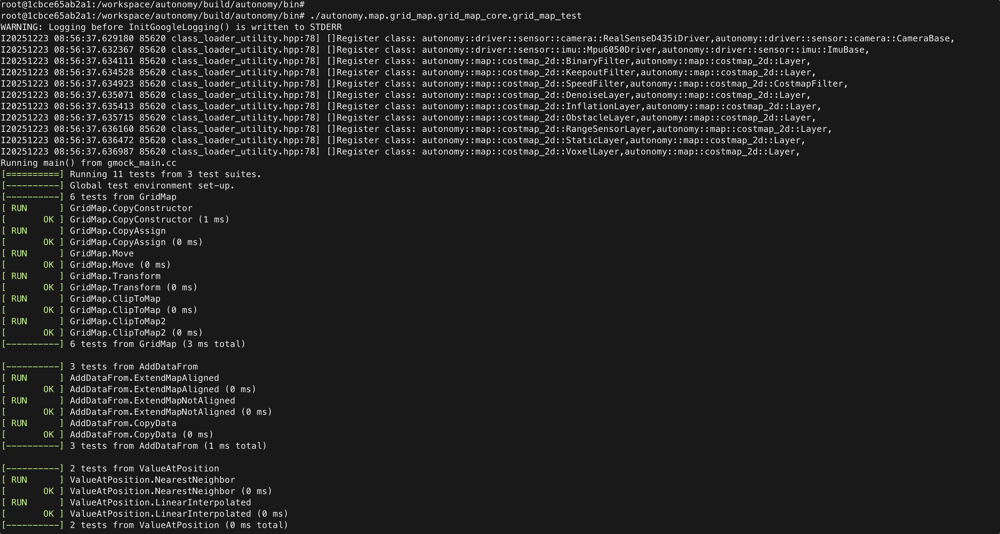

5. Docker 运行时
在 Docker 容器中运行 Autonomy，获得一致的 Ubuntu 环境与预装依赖。启动脚本：docker/run_autonomy.py。
镜像构建与安装见 02 Installation · Docker。
5.1 快速启动
export AUTONOMY_ENV=/path/to/autonomy
cd autonomy/docker
python3 run_autonomy.py -p x86_64
进入容器（默认容器名 SpaceHero，可通过 AUTONOMY_CONTAINER_NAME 修改）：
docker exec -it SpaceHero /bin/bash
cd /workspace/autonomy/build
./bin/autonomy_nav_test --configuration_directory=config ...
5.2 常用参数
参数 |
说明 |
|---|---|
|
平台架构 |
|
NVIDIA 镜像选择 |
|
挂载数据卷 |
|
以宿主机 uid 运行 |
|
保留 Isaac 镜像 ENTRYPOINT |
|
透传 |
# NVIDIA 镜像
python3 run_autonomy.py -p x86_64 -n yes
# 挂载 4TB 数据盘
python3 run_autonomy.py --data-volume /mnt/data4t
5.3 环境变量
变量 |
说明 |
默认 |
|---|---|---|
|
宿主机仓库路径 → |
自动检测 |
|
数据卷列表 |
无 |
|
容器名 |
|
|
端口映射 |
|
|
网络模式 |
|
|
|
关闭 |
|
X11 显示 |
|
~/.bashrc 模板：
export AUTONOMY_ENV=/path/to/autonomy
export AUTONOMY_DATA_VOLUMES=/mnt/data4t
export AUTONOMY_CONTAINER_NAME=SpaceHero
5.4 容器内编译与运行
cd /workspace/autonomy
python3 scripts/install_dependency.py # 若依赖不全
cmake -G Ninja -S . -B build -DBUILD_TOOLS=ON
cmake --build build -j$(nproc)
export AUTONOMY_BT_PLUGIN_PATH=/workspace/autonomy/build/lib
export GLOG_logtostderr=1
./build/bin/autonomy_nav_test \
--configuration_directory=config \
--start_x=1 --start_y=1 --goal_x=5 --goal_y=5

5.5 NVIDIA 镜像说明
默认以 --entrypoint /bin/bash 启动，避免 Omniverse Kit 自动拉起。若需镜像自带逻辑：
python3 run_autonomy.py -p x86_64 -n yes --keep-isaac-entrypoint